1) Calculate the theoretical capacity of a sulfonated polystyrene resin if it contains 8% DVB.
|
styrene unit
|
divinyl benzene unit 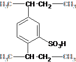 |

Styrene |
|
Divinyl
Benzene |
||||||
|
atom |
# |
weight |
sum |
|
atom |
# |
weight |
sum |
|
C |
8 |
12.01 |
96.08 |
|
C |
10 |
12.01 |
120.1 |
|
H |
8 |
1.01 |
8.08 |
|
H |
10 |
1.01 |
10.1 |
|
O |
3 |
16.00 |
48.00 |
|
O |
3 |
16.00 |
48.00 |
|
S |
1 |
32.07 |
32.07 |
|
S |
1 |
32.07 |
32.07 |
|
|
|
|
|
|
|
|
|
|
|
|
|
total
= |
184.21 |
|
|
|
total
= |
210.25 |
|
|
|
|
[g/mol] |
|
|
|
|
[g/mol] |
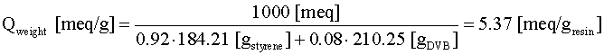
2) Sulfonated polystyrenes have a weight capacity of about 5.4 meq/g. A swollen H+ form resin with 10% DVB has a density of 1.25 g/cm3, a water content of 46.8 wt % and a fractional void volume of 0.4. Calculate the theoretical volume capacity.
|
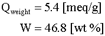 |
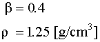 |
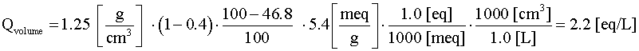
3) Write equilibrium equations for the following systems:
a.
H+
form carboxylic acid resin absorbing sodium
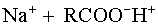
D
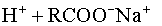
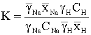
b.
Tertiary
amine resin exchanging Iodide for Chloride
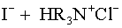
D
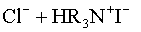
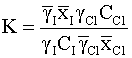
c.
D
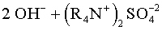
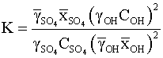
d. H+ form sulfonated polystyrene resin removing Cr+3
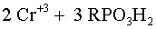
D
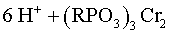
|
Cation
Exchange |
Anion Exchange |
|
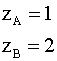 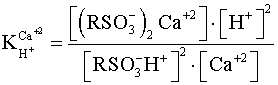 |
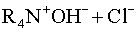D 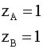 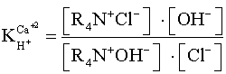 |

4) The area of an ion exchanger material bed is 7ft2 and the rate at which the water is being softened is 9 gpm/ft2. What is the volume of the water being softened every minute? How many hours will the total process take if 32,046 gallons of water can be softened before the resin needs to be regenerated?
volume per minute = (bed area)(loading rate)
= (7ft2)(9 gpm/ft2)
= 63 gpm
Other Options:
.778 – divided area by rate
1.286 – divided rate by area
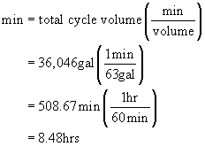
Other Options:
508.67 – need to convert to hours
30520 – multiplied min by 60, need to divide
33648 – multiplied total gallons by gallon per min
5) A brine solution (concentrated solution of table salt) is prepared in advance and then stored until needed. Breakthrough occurs in a water softening process and the resin must be regenerated. How many liters of the brine solution is required if 74.6 kg of salt is needed for the bed of exchange material? The solution of NaCl has a molarity of 1.03.
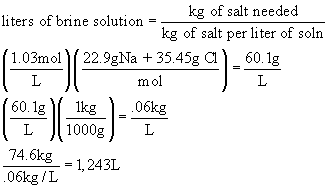
Other Options:
4.476 – (kg salt needed)*(kg of salt per L soln)
1.24 – need to convert grams to kg
72.43 – need to find kg of salt per L, did not convert molarity
6) Would you suggest to someone with a heart condition to use a potassium based ion exchange resin or a sodium exchange resin and why?
a. potassium based resin
potassium based resin: potassium helps to regulate the rhythm of the heartbeat and minimizes the effect of salt on the body. Sodium increases blood pressure.
b. sodium based resin
7) In a given ion exchange reaction in an UPW process, would increasing the flow rate of the water increase productivity of this reactor?
No, this is a equilibrium process, not kinetic. Increasing the flow may actually slow the process by decreasing the residence time which gives less time to react.
8) Is the ion resin fully saturated at breakthrough?
Yes at breakthrough the resin is unable to remove anymore unwanted ions
9) When breakthrough occurs are all sodium ions removed?
No
10) Why do most modern ion exchange resins consist of styrene and DVB and how does the cross-linking of these products improve the productivity of the resin?
The small amounts of DVB and styrene increases wet capacity and absorption capacity of the resin. Selectivity is also improved
11) If a solution contains copper ions would a resin with a potassium ion attached or a resin with a calcium ion attached be more effective in removing the copper ions?
A resin with a potassium ion attached would more effectively remove copper ions because copper has a higher molar selectivity than potassium ions, therefore the resin will more readily absorb the copper ions and release the potassium ions into the solution. Calcium has a higher molar selectivity than copper ions so the resin would not absorb the copper ions readily.
12) In an experiment .400g of air-dried chloride form resin, with a total capacity of 3.63 meq/g, is added to 100mL of .005N (5.0 meq/L) NaNO3. Once at equilibrium the concentration of NO3- is .53 meq/L and the concentration of Cl- is 4.36 meq/L. What is the separation factor for this experiment? Does the resin favor NO3- or Cl-?
Cl-R + NaNO3 → NO3-R + NaCl
Ctotal
= .53 + 4.36 =
4.89 meq/L
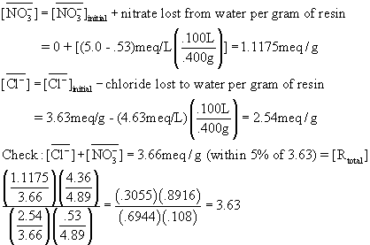
Since the separation factor is greater than 1, the resin favors NO3-.
13)
The water
in
14) If a resin has a total hardness removal capacity of 300,000 grains/cycle and the water treated has a hardness of 353, how many gallons of water can be softened before resin must be regenerated?
15) Define when water is considered “hard water”?
Water
that contains 300 ppm
of CaCO3
16) Name three industrial applications of ion exchange.
Biological recovery, catalysis, hydrometallurgy, medicine, reagent purification, solvent purification, sugar processing, and water treatment
17) What are the three most common ion exchange materials?
Synthetic polymer resins, aluminum silicates, and sulfonated coal
18) Which parameters are Actual Capacity based on?
Concentration, pH, and temperature
19) Will a resin select Ba+2 or Mg+2?
Ba+2 has a higher relative molar selectivity than Mg+2, so Ba+2 will be preferred.
20) Name three effects that govern the overall rate of an ion exchange reaction.
·
Concentration gradients in
both the solution and the resin
·
Electrical charge gradients
in both the solution and the resin
·
Ionic interactions in either
the solution or the resin
·
Resin properties (porosity,
functional groups, capacity)
·
Chemical reactions in either
the resin or solution